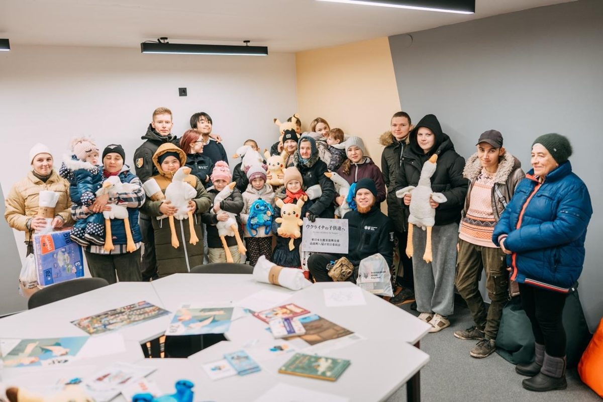
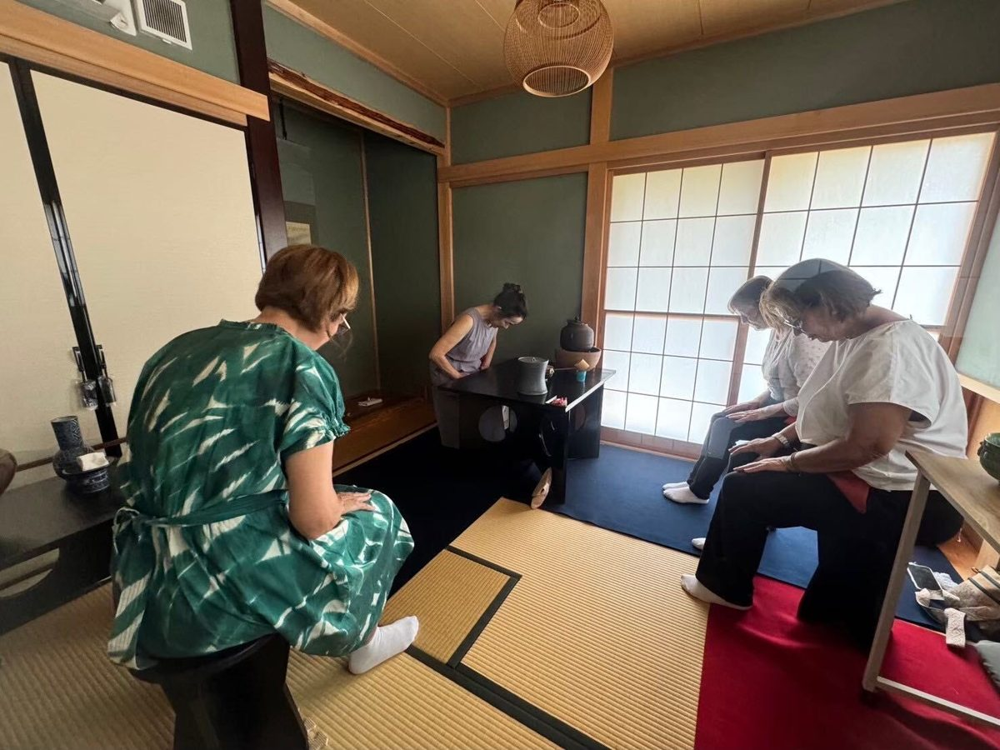
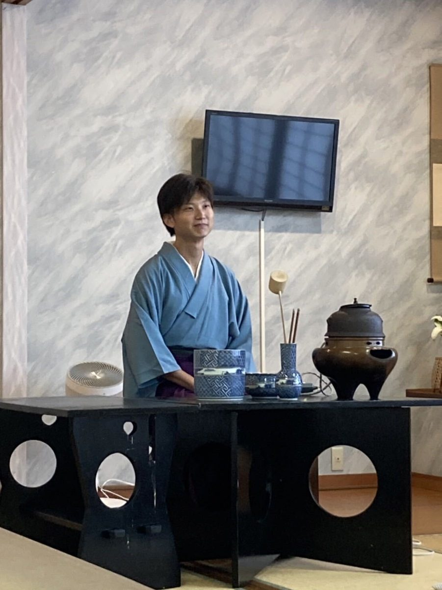

ウクライナ支援
戦争被害によって、居住地域を追われた方々に支援物資を送りました。物資は現地の支援団体の方と協力して避難民の手に渡りました。
Our Activities

戦争被害によって、居住地域を追われた方々に支援物資を送りました。物資は現地の支援団体の方と協力して避難民の手に渡りました。

戦争によって日本に避難してきたウクライナ人の方々を茶室に招き、茶道の体験及び指導によって日本文化に触れてもらう機会を提供しました。

不定期で一般のお客様を招いて、日本文化と深くかかわる芸術の公演を開催しています。茶道に限らず、音楽の演奏や食事会も企画し、参加費によって災害支援金の援助をいただいております。